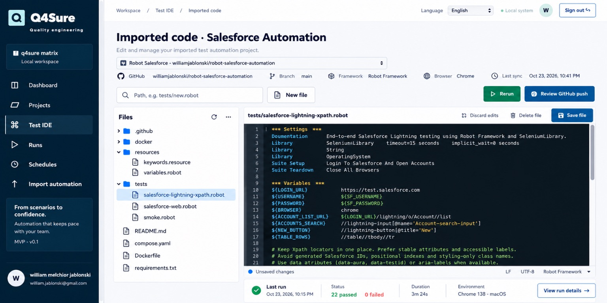
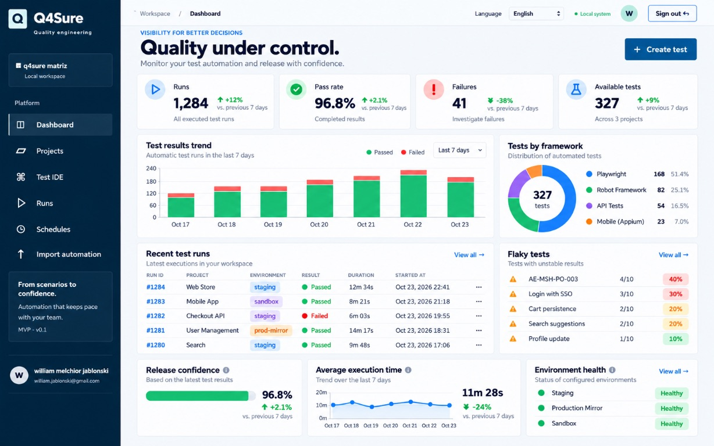
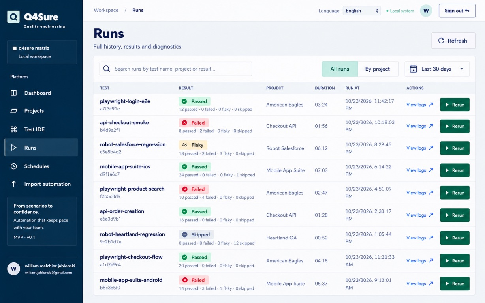
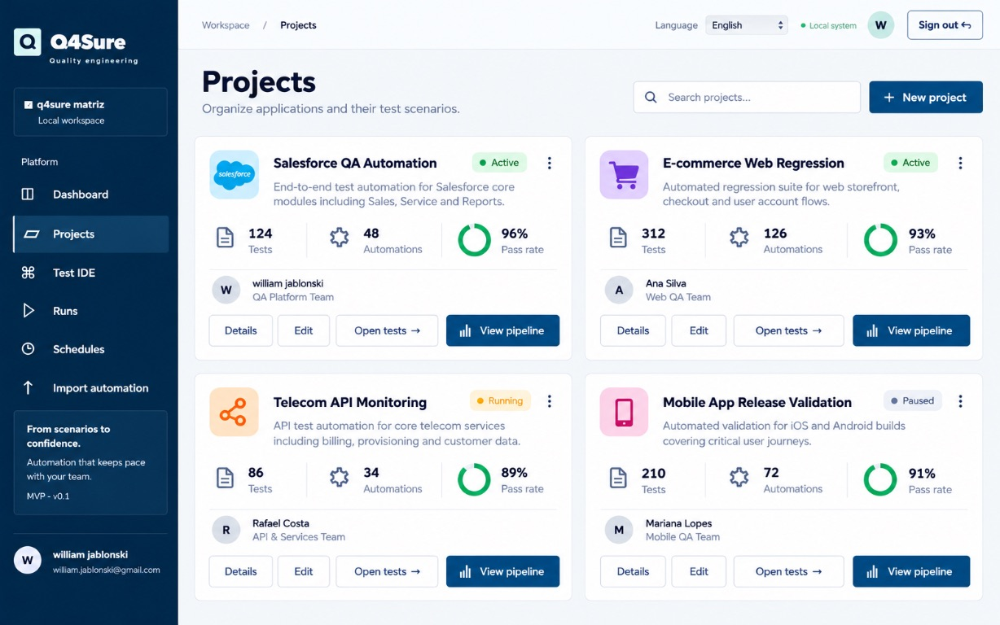
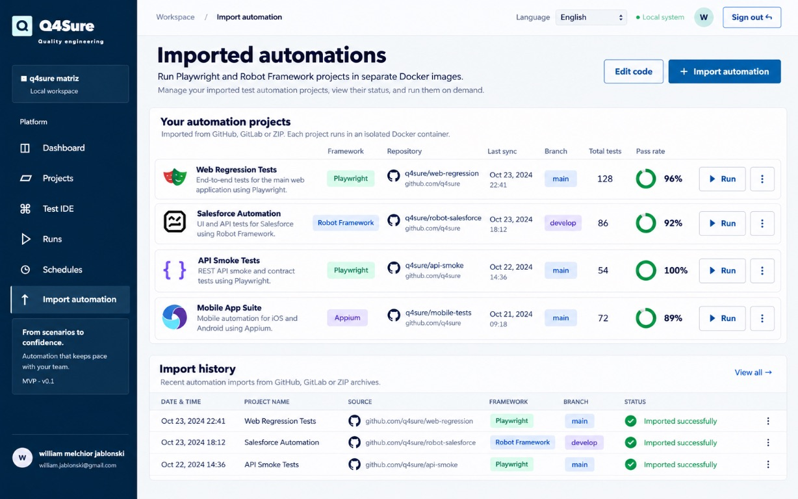
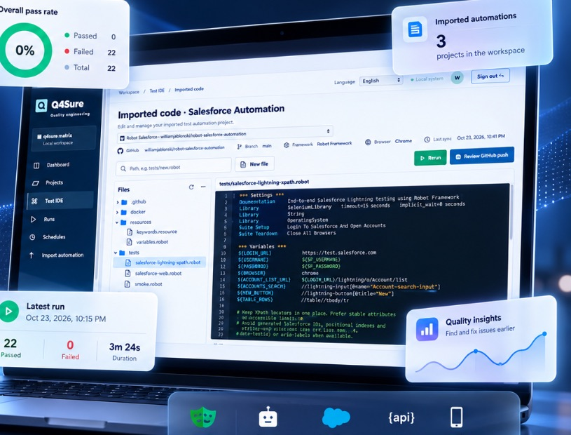
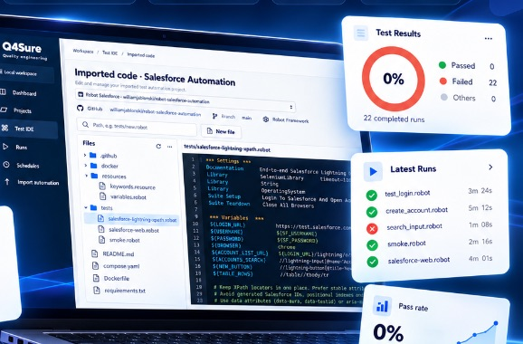

01 / IMPORTED CODE
Edit automations with your project in view
Browse the file structure and work on automation code in the context of your project.
Q4Sure · Quality engineering
Bring API and web test scenarios, runs, and evidence together in one platform—so your team gets a clearer view of software quality.

A connected view of your testing ecosystem
FROM AUTOMATION TO DECISION
When scenarios, tools, and results live in different places, it can be hard to know what is ready to move forward. Q4Sure brings this information closer together in a quality workflow that is easier to follow.
See what you can doONE PLATFORM, DIFFERENT WORKFLOWS
Organize tests, track runs, and find evidence while keeping each team’s validation work in view.

Browse the file structure and work on automation code in the context of your project.

Review run history and find results and diagnostics to investigate failures with more context.

Group tests by project and follow the workflows that are part of your quality process.

View automation projects and their frameworks in an interface designed to make progress easier to track.
TEST IDE · IMPORTED CODE
Browse project files, edit automations, and track test runs in context. Spend less time switching screens to understand what is ready and what needs attention.


A MORE VISIBLE WORKFLOW
A straightforward sequence helps your team see what is being validated, what happened, and where to find the details.
Explore the platformGroup projects and test scenarios by workflow.
Track the test runs and automations in your routine.
Review statuses, logs, and evidence to decide what to do next.
FREQUENTLY ASKED QUESTIONS
A quick overview of the features shown on this page.
The platform screens show API and web test scenarios, as well as automations using tools such as Playwright and Robot Framework.
The dashboard and Runs area bring together statuses, history, and details to help your team review results.
Click “Request a demo” to open your email app with a message addressed to william.jablonski@gmail.com. Review and send the message from your email app.
Q4SURE · QUALITY ENGINEERING